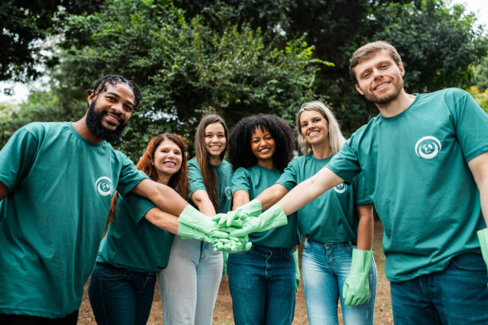
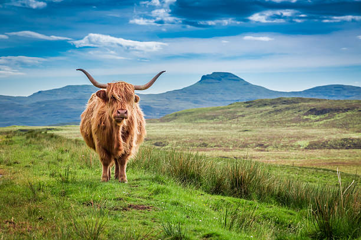

Recycling Page!
This page will talk about how handle recycling!
Recycling is something that ensure the planet's well-being is taken care off
by us humans by dealing with the ammount of waste we generate as a spiece in a manner
that doesn't endanger the ecosystems of this world.


Recycling is helps ensure that things such as bottles, cans, and other general waste
such as food is properly taken care of in a orderly and sorted way so that they can
be taken care off without harming the ecosystem.
another way Recycling can be use is by repurposing & reusing these waste into
something you'll be able to use thoughout your life or for these items to get
remade into a brand new version of it or something entirely different!
Here at GAIA we've been actively per-taking and promoting the usage of Recycling
methods across the world from companies that control asserts across the planet,
the government that governors over these ecosystems and everyday people!
We strongly believe that recycling is the easier and most important soulation
to aiding the world and it's ecosystems from being endangered! as a majority
of issues these systems are facing come from the waste we humans leave behind
without properly taking care of them!

Our team manager
Lucy Afton
Main target location

Scotland, The UK!